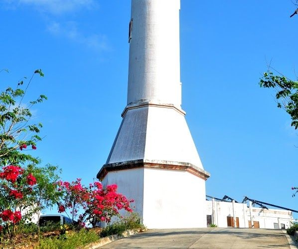
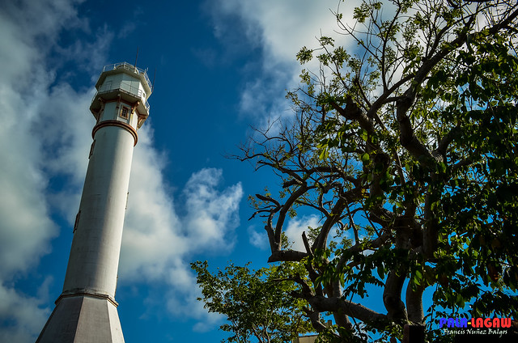
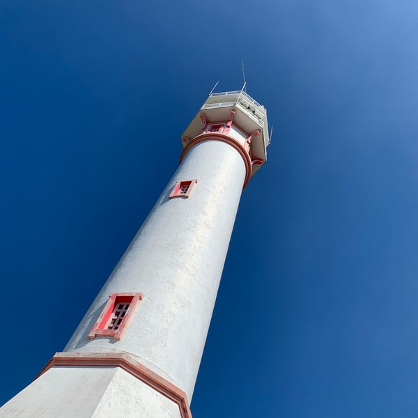
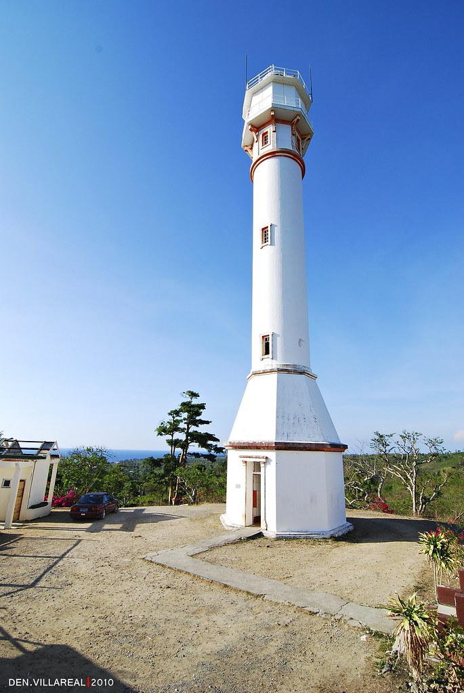

The Cape Bolinao Lighthouse, situated in Bolinao, Pangasinan, Philippines, is an iconic and historically significant landmark
The Cape Bolinao Lighthouse was built in 1905 by a collaboration of American, British, and Filipino engineers. It was constructed to guide ships and seafarers safely to shore, helping to prevent sea disasters in the area.
The lighthouse showcases a combination of architectural influences from the American, British, and Filipino engineers involved in its construction. It is situated at an elevation of 107 meters (351 feet) above sea level, making it the second-highest lighthouse in the Philippines after the Cape Bojeador Lighthouse.